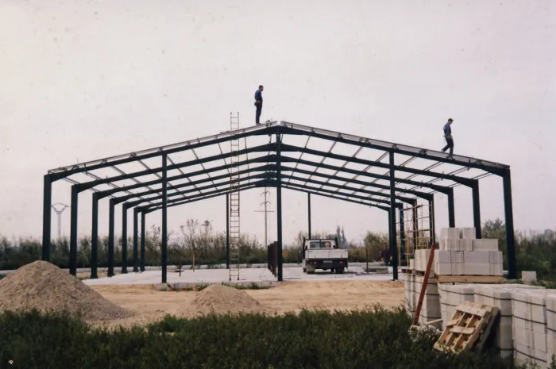
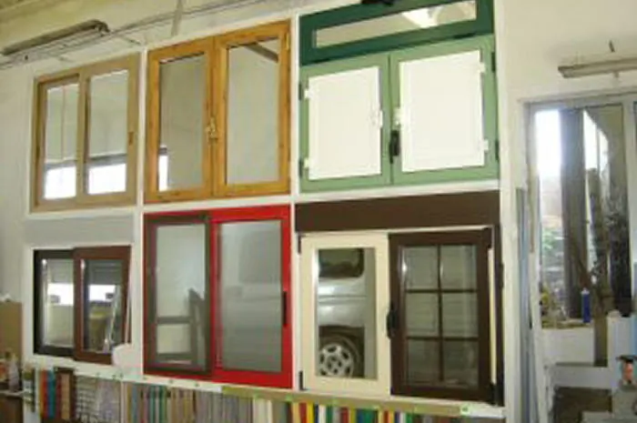
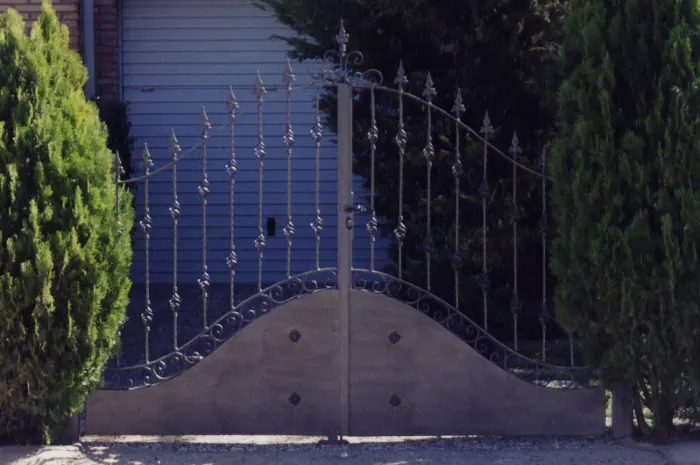
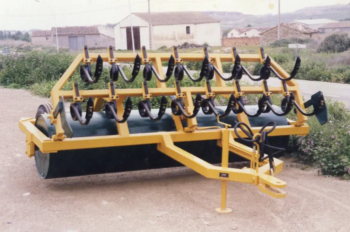
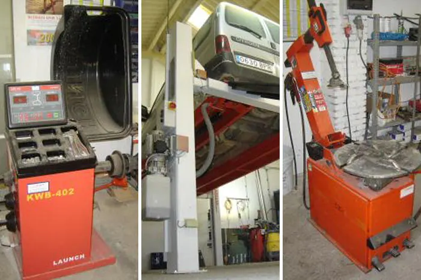
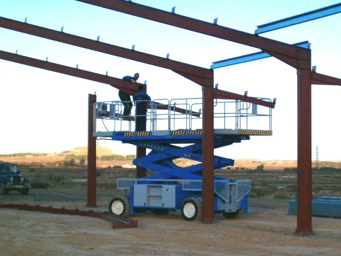
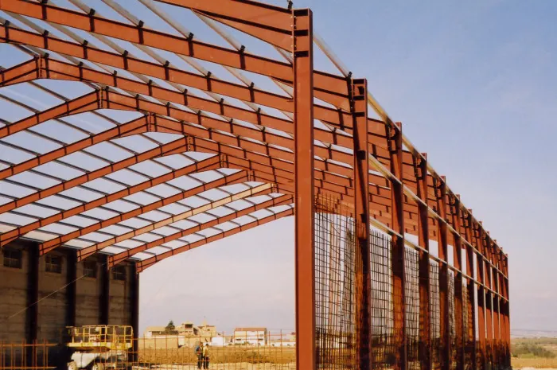
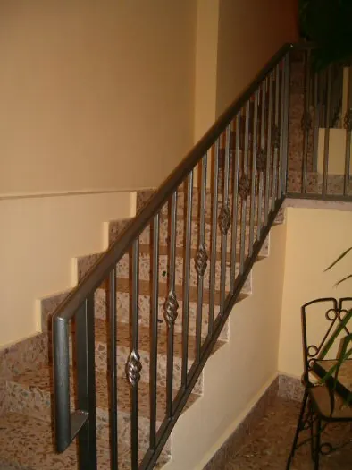
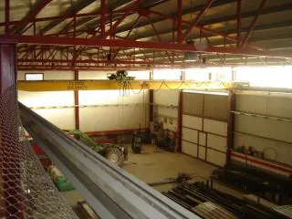

Estructuras y naves metálicas
Naves agrícolas e industriales, cubiertas, porches y estructuras a medida, con montaje propio.
Naves, carpintería metálica, forja y aperos agrícolas a medida. Un taller familiar con tres generaciones de oficio y más de 1.000 m² de instalaciones en Huesca.
Del proyecto al montaje: fabricamos y reparamos en nuestro propio taller.

Naves agrícolas e industriales, cubiertas, porches y estructuras a medida, con montaje propio.

Puertas, ventanas, cerramientos, vallados y cercados metálicos para casas, fincas y naves.

Rejas, barandillas, puertas y piezas decorativas de forja con acabado artesanal.

Fabricación y reparación de aperos y maquinaria agrícola para el campo de Los Monegros.

Cambio de ruedas y aceite, equilibrado y tubos de escape, sin salir de Lanaja.
Cuéntenos qué necesita y le preparamos un presupuesto sin compromiso.
Lo que empezó como un taller mecánico y de forja es hoy una empresa que construye naves, fabrica carpintería metálica y sigue cuidando de la maquinaria y los vehículos de la comarca. El mismo trato cercano, con más medios.
José Mª Martínez Otal funda el taller: mecánica, aperos de labranza y forja.
Marcos Martínez Abadías toma el relevo e incorpora la carpintería metálica y la fabricación de aperos.
Se une su primo hermano, Jorge Amorós Abadías.
Nace la sociedad Martínez‑Amorós, que da nombre al taller actual.
Varias naves contiguas y la maquinaria necesaria para fabricar, montar y reparar con garantía.




Presupuesto sin compromiso por teléfono o correo electrónico.